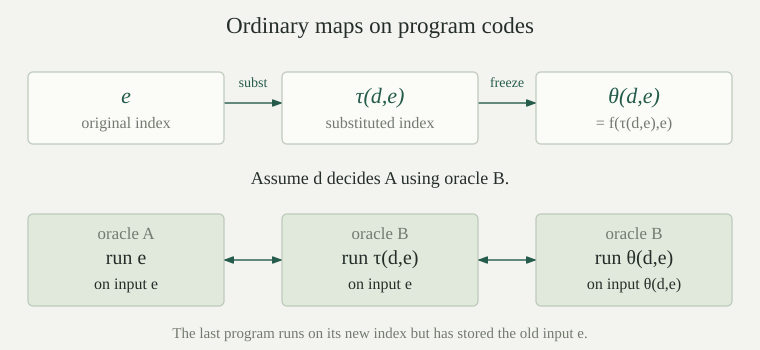

Use the fixed oracle program numbering \(\varphi_e^A(x)\simeq E_A(c_e,x)\). Thus \(c_e\) is a finite program chosen independently of the set \(A\), and \(\mathbf Q\) returns the characteristic bit \(\chi_A(x)\), with one meaning membership. The Turing jump of \(A\subseteq\mathbb N\) is
We also write \(A'=J(A)\). The input in this definition is the same number as the program index. Membership asks for termination with any output, not necessarily zero or one. All equalities \(\simeq\) below concern entire partial values, including divergence. When ordinary programs are needed, write \(p_i\) for the ordinary program of index \(i\), to distinguish it from the oracle program \(c_i\).
There is one finite oracle program \(\mathsf d\), with one numerical index \(\delta\), such that
Consequently \(J(A)=W_\delta^A\) is computably enumerable relative to \(A\), and its positive membership has the certificate description \(e\in J(A)\Longleftrightarrow\exists k\,[b^A(k,e,e)>0]\).
Take the fixed universal program \(\mathsf u\) and set \(\mathsf d=\operatorname{comp}(\mathsf u,\operatorname{pair}(\mathsf{id},\mathsf{id}))\). The inner program sends \(e\) to \(\langle e,e\rangle\), so universal evaluation gives the displayed equality. Put \(\delta=\#\mathsf d\); no oracle is used when forming this number. Its domain is exactly the jump. The certificate assertion is the existing bounded-evaluation equivalence at input \(e\). Checking this certificate may query \(A\); it is not claimed to be an ordinary decidable relation.
Define the input-freezing map
This is one ordinary primitive-recursive function, independent of any oracle, and
In particular \(x\in W_e^A\Longleftrightarrow f(e,x)\in J(A)\).
The constant program returns \(x\) on every input, so the composed program ignores \(y\) and runs precisely \(c_e\) on \(x\). Strict composition preserves the value and also divergence. Numerically the specified index is \(7+4\langle e,\#\mathsf{const}(x)\rangle\), using the actual oracle-numbering constructor. Constant codes and this constructor are primitive recursive. The map constructs program text; it never tries to run \(c_e\). Taking \(y=f(e,x)\) proves the final equivalence. Replacing \(e\) by a new index without freezing \(x\) would not justify that diagonal conclusion.
There are two fixed ordinary primitive-recursive maps \(q_1,q_0:\mathbb N\to\mathbb N\) such that, simultaneously for every \(A\),
Thus \(A\le_m J(A)\) and \(\overline A\le_m J(A)\), with ordinary total computable many-one maps.
For \(b=0,1\), choose a fixed query-free program \(t_b\) returning zero exactly at \(b\), and one elsewhere. Such equality tests are ordinary primitive recursive and have query-free oracle programs. Form
On input \(z\), the search starts at zero and repeats the same test \(t_b(z)\). It returns zero if \(z=b\), and otherwise all tests are one and it never returns. This uses the actual sequential-search convention; it introduces no extra instruction. Set \(a_b=\#\operatorname{comp}(G_b,\mathbf Q)\) and \(q_b(x)=f(a_b,x)\). The resulting program, on any input, queries \(x\) and halts exactly when its answer equals \(b\). The input-freezing identity proves both displayed equivalences. Since \(a_0,a_1\) are fixed numbers and \(f\) is primitive recursive, both reduction maps have the stated ordinary effectiveness.
For every set \(A\subseteq\mathbb N\), the jump is \(A\)-c.e. but is not \(A\)-computable. Moreover
meaning \(A\le_T J(A)\) and \(J(A)\not\le_T A\). The complement of \(J(A)\) is not \(A\)-c.e.
The fixed recognizer proves relative enumerability. Suppose a program \(h\) computed the total characteristic function \(\chi_{J(A)}\) using oracle \(A\). Form the finite program \(P=\operatorname{comp}(G_0,h)\), using the zero gate constructed above, and put \(p=\#P\). On input \(z\), this program halts exactly when \(h\) returns zero, which is exactly when \(z\notin J(A)\). But at its own index this says
This contradiction rules out every such decider. The argument fixes \(A\) and a proposed finite decider before constructing one finite diagonal program; no different program is chosen for each numerical input. Since \(A\le_m J(A)\), the comparison of reducibilities gives the lower Turing reduction. Finally, if the complement of the jump were also \(A\)-c.e., relative two-sided recognition would make the jump \(A\)-computable, contradicting the diagonal argument.
Conversely, every degree at least as large as ordinary halting is the jump of a smaller degree: Friedberg jump inversion constructs a generic oracle with that prescribed jump degree, even with any finite binary beginning specified. The ordinary-halting lower bound is exactly the necessary restriction.
For every oracle \(A\) and set \(S\subseteq\mathbb N\),
For every domain index \(e\), the specified map \(x\mapsto f(e,x)\) witnesses \(W_e^A\le_m J(A)\), with the same numerical construction for all oracles.
If \(S=W_e^A\), the input-freezing equivalence gives this exact reduction, including when the domain is empty or finite. Its function is total ordinary primitive recursive; using the oracle to recognize \(S\) does not make the map an oracle computation.
Conversely, let a total ordinary computable function \(g\) satisfy \(x\in S\Longleftrightarrow g(x)\in J(A)\). Choose a query-free program computing \(g\) and compose it with the fixed jump recognizer \(\mathsf d\). On input \(x\), the first calculation always finishes with \(g(x)\); the second halts exactly on members of \(J(A)\). This program's domain is \(S\). The same argument shows that the preimage of any \(A\)-c.e. set under an ordinary total computable map is \(A\)-c.e.; no negative membership answer is needed for recognition.
The input-freezing map is also injective, giving one-one completeness with ordinary maps. Uniform injective recodings relate diagonal halting to halting on input zero for every oracle.
Suppose both \(S\le_m J(A)\) and \(\overline S\le_m J(A)\). Must \(S\) be \(A\)-computable? Would the first reduction alone suffice?
Both reductions make \(S\) and its complement \(A\)-c.e., by . Relative two-sided recognition then gives an \(A\)-oracle decider. It runs the two recognizing calculations in the fixed oracle race and reports which one returns; exactly one side returns on every input.
The first reduction alone does not suffice: take \(S=J(A)\), whose identity map reduces it to itself. proves that this set is not \(A\)-computable. The second reduction cannot exist in this example, because its complement is not \(A\)-c.e.
The specified index transformation
is ordinary primitive recursive in \(d,e\). If \(c_d\) witnesses \(A\le_T B\), then for all \(e,x\),
Use the actual syntactic substitution: ordinary leaves are retained and the query leaf is replaced by \(c_d\); an inserted program is not substituted into again. Numerically, \(\tau(d,i)=i\) for \(i<4\), and \(\tau(d,4)=d\). Let \(C_{\rm pair},C_{\rm prec},C_{\rm comp}\) be the three binary numerical constructors from the oracle coding, respectively \(5+4\langle p,q\rangle\), \(6+4\langle p,q\rangle\) and \(7+4\langle p,q\rangle\). The remaining clauses are
All immediate subcodes are smaller than the current code. The parameterized history-recursion construction therefore computes these values by ordinary primitive recursion, retaining \(d\) as a numerical parameter. The defining clauses and the coding bijection identify the decoded result with exactly \(\operatorname{subst}(c_d,c_e)\).
The reduction hypothesis says \(E_B(c_d,q)\downarrow=\chi_A(q)\) at every query \(q\), including termination on negative answers. The substitution theorem now proves the partial-value identity. The numerical compiler exists without that hypothesis; the hypothesis is what gives it the asserted semantics for the two selected oracles.
Define the ordinary primitive-recursive two-variable map \(\theta(d,e)=f(\tau(d,e),e)\). For every \(A,B,d\), if \(c_d\) witnesses \(A\le_T B\), then
Consequently \(e\mapsto\theta(d,e)\) witnesses \(J(A)\le_m J(B)\). The single numerical function \(\theta\) is fixed before choosing the oracles.
The first identity is input freezing; the second is query substitution under the given total characteristic reduction. Both preserve divergence. In particular take \(y=\theta(d,e)\). Its left side is now the target program on its own index, so it halts exactly when \(\varphi_e^A(e)\) halts. This is precisely the required membership equivalence.
Substitution alone would leave the original input \(e\), whereas the jump of \(B\) tests a program on its new index. The extra freezing step makes those two inputs agree in meaning without claiming that their numbers are equal. Composition of the two ordinary primitive-recursive code maps proves the stated uniform effectiveness.

For all \(A,B\subseteq\mathbb N\),
The forward direction is , after choosing the index of a reduction program.
Conversely, suppose an ordinary total computable \(g\) reduces \(J(A)\) to \(J(B)\). The two specified maps \(q_1,q_0\) then give
Both composites are ordinary total computable. Since \(J(B)\) is \(B\)-c.e., the preimage construction in makes \(A\) and \(\overline A\) both \(B\)-c.e. Relative two-sided recognition gives a total \(B\)-oracle characteristic program for \(A\), hence \(A\le_T B\). This direction uses both signs of an \(A\)-membership query; enumerability of just one side would not give a decider.
Write \(X\equiv_m Y\) when both \(X\le_m Y\) and \(Y\le_m X\) hold. Let \(K=\{i:\varphi_i(i)\downarrow\}\) be the ordinary diagonal halting set, using the established ordinary numbering. Then
Literal equality of the two halting sets is not asserted.
Write \(\iota(p)\) for the query-free embedding of an ordinary program. Let \(\epsilon(c)=\operatorname{erase}_{\mathbf0}(c)\) be the ordinary erasure replacing each oracle query by the constant-zero program. The respective numerical translations are
Both maps are ordinary primitive recursive. For \(b\), retain each ordinary leaf and build the corresponding oracle constructor at every internal node. For \(a\), replace oracle leaf four by ordinary leaf zero, retain the other leaves and use the ordinary constructors on translated children. The ordinary and oracle structural-recursion constructions compute exactly these recodings; the two constructor numberings are different. The established evaluation identities give
For ordinary programs define \(f_{\rm ord}(i,x)=\#_{\rm ord}\operatorname{comp}(p_i,\mathsf{const}_{\rm ord}(x))\). The same constant-code argument as for , using the ordinary constructors, proves that this is primitive recursive and \(\varphi_{f_{\rm ord}(i,x)}(y)\simeq\varphi_i(x)\) for every \(y\). Now set
Freezing the original inputs yields \(i\in K\Longleftrightarrow u(i)\in J(\varnothing)\) and \(e\in J(\varnothing)\Longleftrightarrow v(e)\in K\). Thus both maps are actual ordinary primitive-recursive many-one reductions. Merely embedding or erasing a program would not preserve its diagonal input, and nothing here claims that these maps are injective.
Let \(A=\{2n:n\in\mathbb N\}\). Is \(J(A)\) ordinarily decidable? Are \(J(A)\) and the ordinary halting set \(K\) many-one equivalent?
The even numbers are decidable by an ordinary parity test, so \(A\equiv_T\varnothing\). Applying in both directions gives \(J(A)\equiv_m J(\varnothing)\); combining with gives \(J(A)\equiv_m K\).
Therefore \(J(A)\) is not ordinarily decidable, since a decider together with the reduction from \(K\) would decide \(K\). Equally, an ordinary decider would be an \(A\)-oracle decider by ignoring its oracle, contradicting jump strictness. A decidable oracle does not supply its own halting answers. The argument works for every fixed computable oracle, though its reduction to the empty oracle uses a chosen ordinary characteristic program for that set.
The equality of jump degrees also occurs for some noncomputable oracles, as the low simple construction shows.
For a Turing degree \(\mathbf a=[A]\), define its degree jump by \(\mathbf a'=[J(A)]\). This is independent of the representative: if \(A\equiv_T B\), jump monotonicity gives many-one reductions in both directions between their jumps, hence Turing equivalence. It is an order-preserving operation on degrees, because \(A\le_T B\) implies \(J(A)\le_m J(B)\), hence \([J(A)]\le[J(B)]\).
The finite jump iterates are defined by
Induction gives \(\mathbf a^{(n)}=[A^{(n)}]\), independently of the chosen representative. In particular \(\mathbf0'=[J(\varnothing)]=[K]\) by the recoding theorem. Well-definedness and monotonicity use the forward implication proved above. The degree jump is not injective, and its range is exactly the degrees above \(\mathbf0^{\prime}\).
Post’s theorem gives the precise quantifier classification of these finite iterates: for every \(n\ge0\), the \(A^{(n)}\)-c.e. sets are exactly \(\Sigma_{n+1}^A\), and the sets computable in \(A^{(n)}\) are exactly \(\Delta_{n+1}^A\). The quantifier classes are defined independently, using \(A\)-computable matrices.
For every \(A\subseteq\mathbb N\) and all natural numbers \(m<n\),
Consequently every degree has a strictly larger degree and the Turing degrees have no greatest element.
Jump strictness applied to \(A^{(j)}\) gives \(A^{(j)}<_T A^{(j+1)}\) for every \(j\). Transitivity gives \(A^{(m)}\le_T A^{(n)}\) when \(m<n\). If the reverse reduction existed, the lower reductions along the chain would give \(A^{(m+1)}\le_T A^{(n)}\le_T A^{(m)}\), contradicting the first strict step; this includes \(n=m+1\). Passing to the degree order gives the same strict comparison there. Finally any proposed greatest degree \(\mathbf a\) has its strictly larger jump \(\mathbf a'\), contradicting greatestness.
These strict chains do not exhaust the order: a finite-extension construction gives incomparable degrees strictly between the computable degree and its first jump.
Is \(J(A)\equiv_T A\oplus K\) true for every oracle \(A\), where \(\oplus\) is the established even/odd join?
No. Take \(A=K\). The idempotence of the join gives \(K\oplus K\equiv_T K\), whereas gives \(J(K)\not\le_T K\). Hence \(J(K)\) cannot be Turing equivalent to \(K\oplus K\). The jump asks about programs that may themselves use the full oracle \(A\); adding only the ordinary halting set does not universally answer those stronger questions.
The identity does hold for every 1-generic set: its jump is equivalent to its join with ordinary halting. The finite-prefix decision property supplies a total jump program for this class of oracles.
A different failure concerns joins of two oracles: splitting the ordinary halting set into low pieces gives low c.e. sets whose join is nonlow. Thus the jump of a join need not have the degree of the join of the individual jumps.